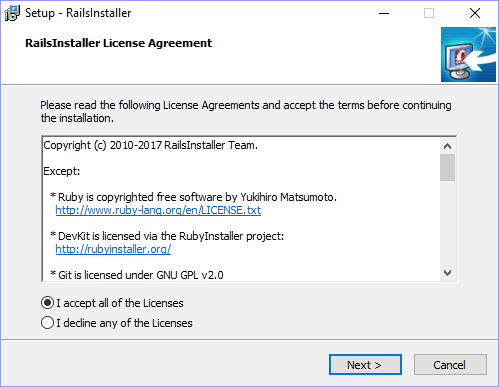
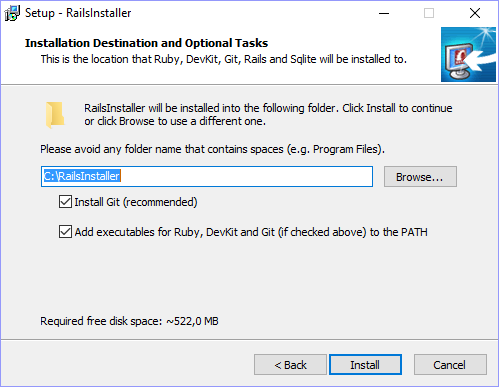
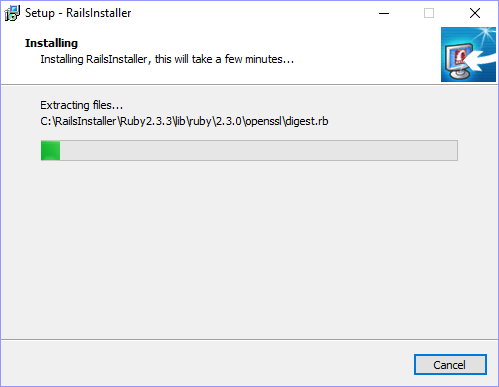
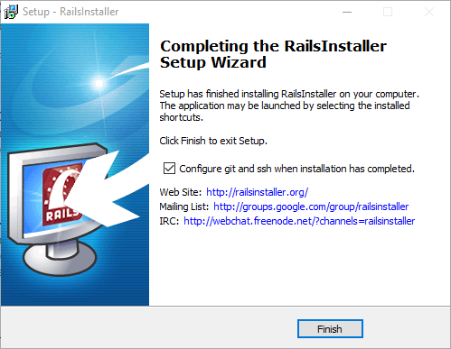
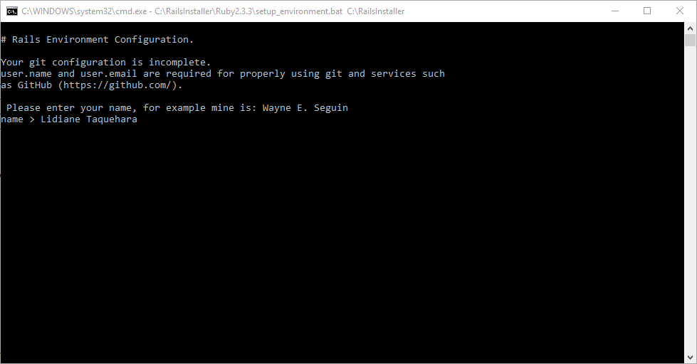
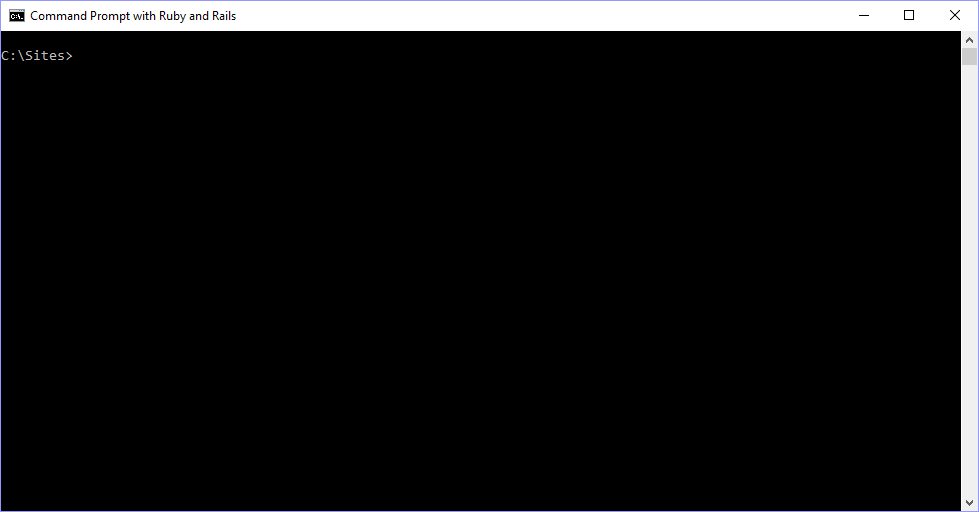
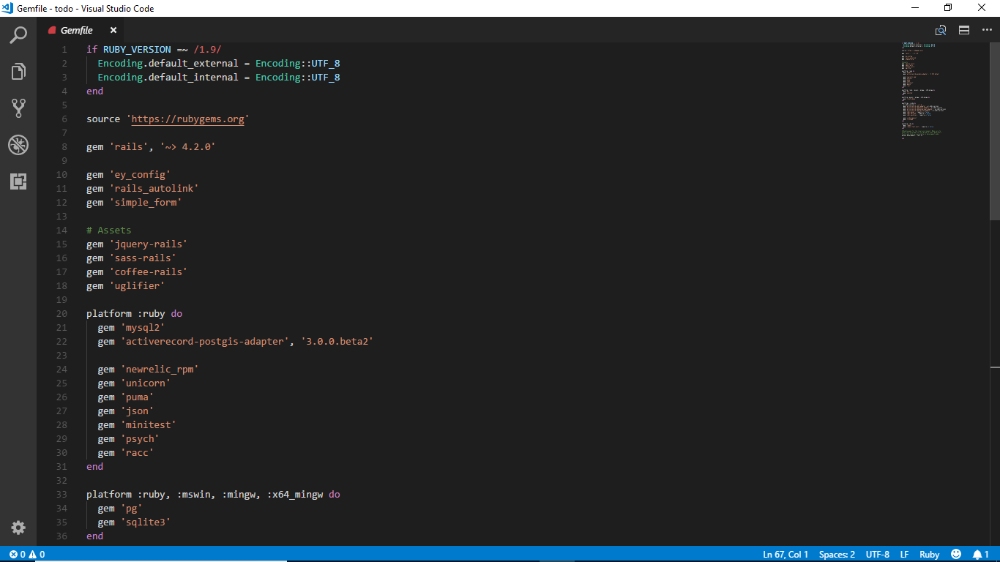

Otimizado para a felicidade da pessoa que programa
Convenção sobre configuração
Open Source
Configurações Iniciais
Download do kit do Rails Installer
Clique aqui para fazer o download do kit para Windows do Rails Installer.
Salve o arquivo.
Execute o arquivo salvo para iniciar a instalação.
Fonte:
Instalação

Instalação

Instalação

Instalação

Prompt de Comando com Ruby e Rails

# Rails Environment ConfigurationYour git configuration is incomplete.user.name and user.email are required for properly using git andservices such as GitHub (https://github.com). Please enter your name, for example mine is: Wayne E. Seguinname > Lidiane TaqueharaSetting user.name to Lidiane Taquehara Please enter your email address, for example mine is:wayneeseguin@gmail.comemail > lidi.mayra@gmail.comSetting user.email to lidi.mayra@gmail.com
ssh: public_key_location: C:\Users\Lidiane/.ssh/id_rsa.pub public_key_contents: ssh-rsa AAAAB3NzaC1yc2EAAAADAQABAAABAQCg8WqnzqiIQyMLVasB+xsxzO1b1HXDGp6icOZbI1Mg0EJoj1AoMjd0ml9qWAtkEHNBZbahyCntR8vErtlfUmna5oZdC7Siz/qBOQqQ3zUfaQsO8VMhdLqMy7/JrjvFhaPGu5qaJXGe89UcCM04Ks4MGZ2X4wc8EWGIqxyevyTQirbLrVThBgsWz1D+tU2xqo2P7h7vKivIg77nmeHCgo+uOzyUlyZEYlc/CIdTVYJzyUKZNq+Kt/IRyJa12wisjzMttd5AZhvUjBpszjtL63H1oqgz19yb5WZdO9z0jD5ak5j1eo810niRNtEmYJ3moqistcusKVnMo+qgImamnM9N LidianeTaquehara <lidi.mayra@gmail.com>NOTES: Your public ssh key (id_rsa.pub) has been automatically generated and copied to your clipboard.C:\Sites >
Prompt de comando com Ruby e Rails

Criação de aplicações
Implementação de recursos
Execução de tarefas
C:\Sites
→ Diretório padrão criado pelo RailsInstaller.
Listagem de arquivos
Para listar os arquivos existentes no diretório, utilizamos o comando ls:
C:\Sites>ls
todo
todo é um app demo disponibilizado pelo RailsInstaller.
Navegando entre diretórios
Para mover para dentro de um diretório, utilizamos o comando
cd (change directory):
C:\Sites>cd
C:\Sites\todo>
Agora estamos dentro do diretório todo.
Utilizem o comando de listagem para visualizar os arquivos contidos
na aplicação demo. 💃
Rodando a aplicação demo
Gems
Bibliotecas escritas em Ruby.
Definidas no arquivo Gemfile.

Instalação das Gems
Para gerenciamento das gems, utilizamos uma ferramenta chamada
Bundler (já vem
instalada no kit do RailsInstaller).
Para instalar as gems definindas no Gemfile, basta executar
o comando bundle install.
C:\Sites\todo>bundle install
Migrações
Funcionam como "versões" do banco de dados
Precisamos rodar uma tarefa para que as migrações existentes
sejam executadas
Para isso, utilizamos o comando bundle exec rails db:migrate
C:\Sites\todo>bundle exec rake db:migrate
C:\Sites\todo>bundle exec rake db:migrate[Simple Form] Simple Form is not configured in theapplication and will use the default values. Use `railsgenerate simple_form:install` to generate the Simple Form configuration.= 20110607004915 CreateTasks: migrating ==============================- create_table(:tasks) -> 0.0035s= 20110607004915 CreateTasks: migrated (0.0045s) ====================== 20110608232732 CreateLists: migrating ==============================- create_table(:lists) -> 0.0023s= 20110608232732 CreateLists: migrated (0.0037s) =====================